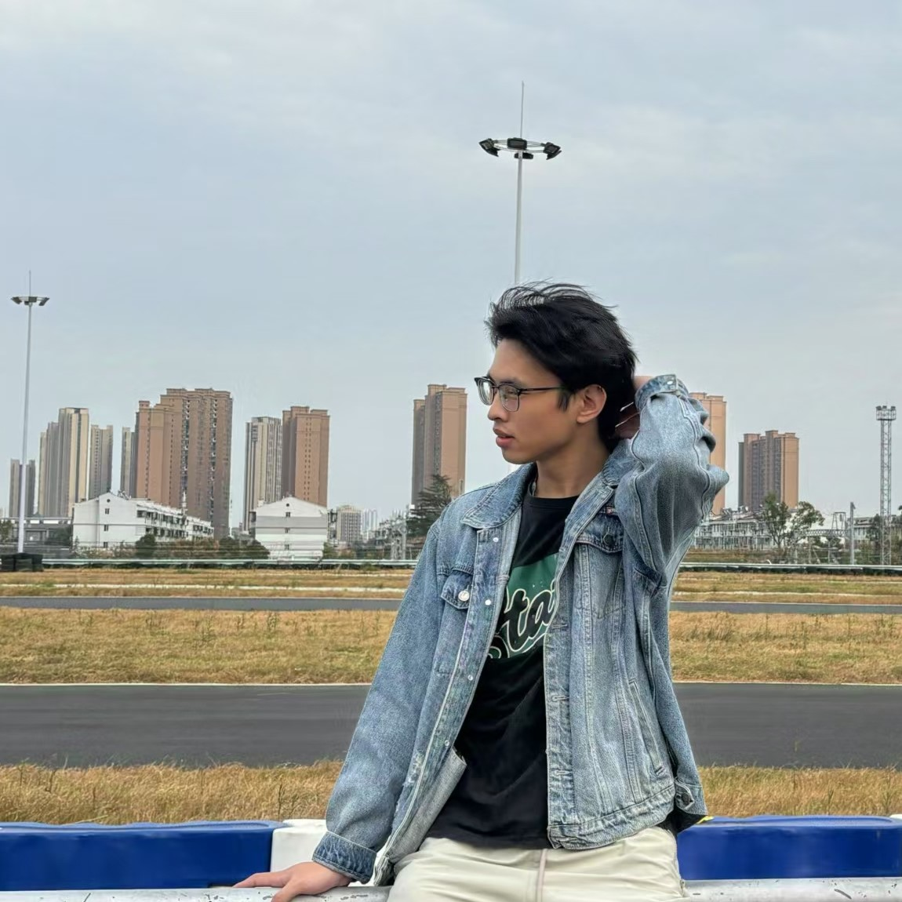

|
Huaxin Zhang (HUST) Currently, I am a Master student of HUST (Huazhong University of Science and Technology), supervised by Prof. Changxin Gao and Prof. Prof. Nong Sang. Prior to this, I received my Bachelor's degree at Huazhong University of Science and Technology in 2022. My primary research interests lie within the fields of Deep Learning and Computer Vision, current and previous focal areas include: Google Scholar / Github / Email |

|
News
- [12/2024] We release HolmesVAU, including a large-scale multi-granularity benchmark for video anomaly understanding and an Anomaly-focused Temporal Sampler (ATS) to enhance both efficiency and accuracy of MLLMs in processing long videos.
- [10/2024] We release Arcana, which aims to enhance the visual perception capabilities of MLLMs from instruction data and model structure aspects.
- [06/2024] We release HolmesVAD, a novel framework that leverages rich multimodal instructions to enable comprehensive explanations for video anomay detection.
- [03/2024] We release GlanceVAD, which primarily explores the single-frame supervision in the video anomaly detection domain.
- [12/2023] We release HR-Pro for temporal action localization in untrimmed videos, which largely surpasses all previous point-supervised methods, and even outperforms several competitive fully-supervised methods.
- [06/2022] We release GAM-Net, a Graph-based Armband Modeling Network for arm movement recognition.
- [07/2022] We release the first place winning solution for temporal action detection task in CVPR-2022 AcitivityNet Challenge.
Selected Publications
Experiences

|
Baidu VIS
Jan. 2024 - Jun. 2024
Algorithm Intern
|

|
Huazhong University of Science and Technology (HUST)
Sep. 2022 - Jun. 2025
Master Degree
|
|
|
Huazhong University of Science and Technology (HUST)
Sep. 2018 - Jun. 2022
Bachelor Degree
|